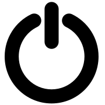

<!--The content below is only a placeholder and can be replaced.-->

    <app-desktop-page *ngIf='desktopIsActivete' [app]='app' [TS]='TS' [audio]='audio' [tasks]='tasks' [exit]="exit" ></app-desktop-page>
    <div class="off" *ngIf='!desktopIsActivete'></div>


<router-outlet></router-outlet>
